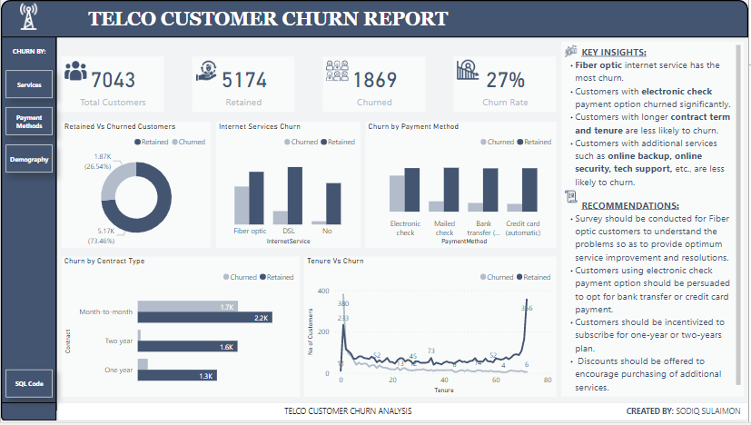
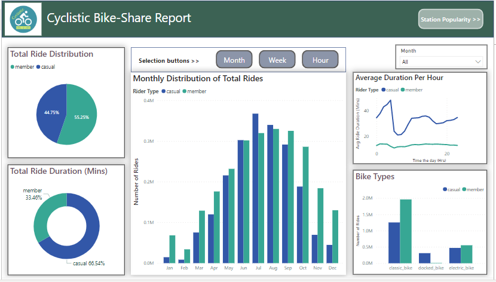
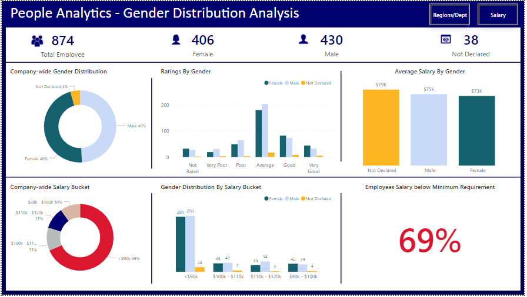
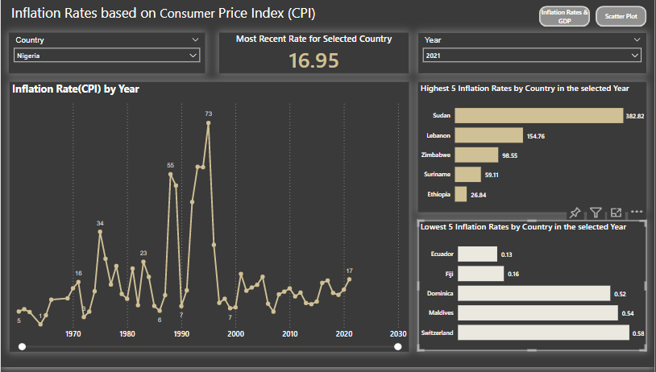
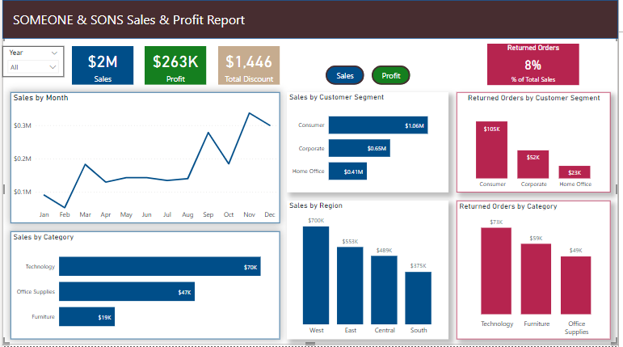
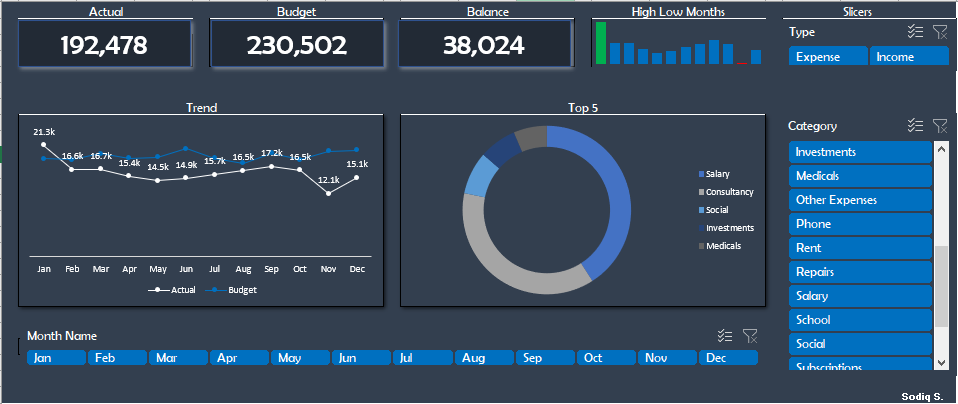

About Me
I had my first degree in Petroleum Engineering where I graduated with a first class and as the overall best student. Owing to my past interests, I have work experience in Sales, Internal Control & Audit, and Engineering.
I started learning data analytics to be more productive in my last job but then I realized how data could be used to solve numerous business and real life problems. So I decided to pivot to data science. My ultimate goal is to become a Machine Learning & Arificial Intelligence professional and I have started building my intuition in the concepts.
I have always been passionate about helping businesses make data-driven decisions. In each of my previous jobs, I used data in one way or the other to provide input that were key to making business decisions and improve business processes.
Customer Churn Analysis in SQL

Customer churn - loss of customers - is a big concern for subscriber-based businesses where revenue largely depends on subscription.
This is because the cost of maintaining an existing customer is usually significantly lower than the cost of acquiring new ones and also because long-term customers are more profitable.
Customer churn analysis helps to uncover useful insights and important business metrics, such as churn rate, that can help to mitigate this problem.
I conducted an exploratory data analysis on a telco customer churn dataset to uncover the likely reasons for churn and recommendations as to how to prevent further customer attrition.
The SQL code can be found here and the Power BI report can be viewed here.
The dataset for this analysis was downloaded from Kaggle here.

This project was a capstone of my Google Data Analytics Certificate. I performed exploratory data analysis (EDA) on historical datasets of a fictional bike-sharing company to understand how different categories of riders use the bikes and provided recommendations to the marketing team on how to convert casual riders to members.
The analysis can be found here. I also created an interactive report for the analysis on PowerBI and can be accessed here.

In this analysis, I took a deep dive into the HR data of a fictitious manufacturing company to uncover insights about gender equality and pay parity in the company.
My findings, conclusions, and recommendations are documented in a Google Slides file here .
The interactive report of the analysis can be viewed here.

Inflation is an enemy of countries and individuals. It sinks countries into instability and erodes the purchasing power of people.
Inflation is a measure of increase in the prices of a set of goods and services over a period of time, usually a year. It is most widely measured by consumer price index (CPI), which is the cost of different categories of commonly purchased goods and services relative to a base year.
I was curious about the inflation rates for countries, so I did an analysis of world inflation rates. Also, because both types of inflation, 'cost-push' and 'demand-pull', result from the size of a country’s economy relative to money supply, I decided to analyze the Gross Domestic Product (GDP), which is the summation of all goods and services produced in a country during a specific period of time, usually a year, to see if there’s any correlation. Both datasets are open data downloadable from World Bank website
The report of the analysis can be found here

I analyzed the sales data of a fictitious company to understand the performance of the business and created a profit and sales report in Power BI.
The interactive report can be accessed here.

I replicated a personal budget dashboard in Excel to hone my Excel dashboarding skills.
The dashboard can be found here.
Resume
Click here to view/download a copy of my resume.
Contact